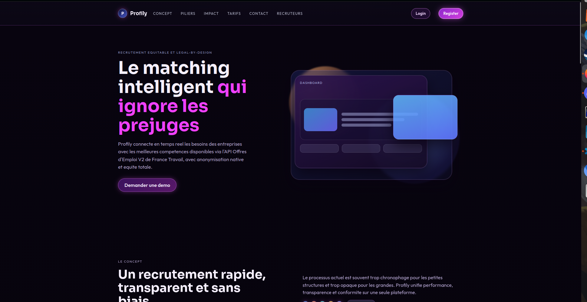

Mes Projets Majeurs
Découvrez en détail mes projets , autant des projets personnels que scolaire. Chaque projet représente une opportunité d'apprentissage et de démonstration de mes compétences en développement web, IA et design d'interface.
Profily
Profily est un projet d'intelligence artificielle innovant conçu pour lutter contre la discrimination à l'embauche. La plateforme anonymise les candidatures en mettant en avant les compétences et le contenu plutôt que l'identité du candidat, afin de garantir une égalité réelle des chances lors du recrutement.
Le projet combine une interface web intuitive, un backend sécurisé et un moteur d'IA pour l'analyse intelligente des profils. C'est un engagement personnel envers l'équité et l'accessibilité dans le monde professionnel.
Fonctionnalités principales :
- Anonymisation automatique des CV et lettres de motivation
- Matching intelligent entre offres et candidats basé sur les compétences
- Tableaux de bord distincts pour recruteurs et candidats
- Respect strict de la vie privée et conformité RGPD
- Analyse prédictive des compatibilités profils-offres

Maquette Mairie Interactive
Réalisation d'une maquette web complète et interactive pour une mairie fictive. Ce projet démontre mes compétences en design d'interface, accessibilité web et expérience utilisateur. La maquette propose une navigation fluide, des animations modernes et une architecture adaptée aux besoins d'une collectivité territoriale.
Le site offre une expérience utilisateur optimale avec un design responsive qui s'adapte à tous les appareils, des animations engageantes et une accessibilité renforcée pour tous les visiteurs.
Points forts du projet :
- Design responsive et moderne adaptable à tous les écrans
- Accessibilité web renforcée (WCAG compliant)
- Pages interactives (actualités, démarches, événements, contact)
- Animations fluides et transitions élégantes
- Performance optimisée et SEO-friendly
Démo interactive ci-dessous :
Nova Assistant
Nova Assistant est un assistant vocal intelligent développé en Python, conçu pour offrir une expérience intuitive et accessible. L'application permet de contrôler son ordinateur à la voix, d'automatiser des tâches quotidiennes et d'aider les personnes en situation de handicap à accéder plus facilement à l'informatique.
Le projet combine reconnaissance vocale avancée, traitement du langage naturel et interface web responsive. Nova est particulièrement pensée pour les utilisateurs en situation de handicap moteur ou visuel, les aidant à gagner en autonomie.
Fonctionnalités principales :
- Reconnaissance vocale en temps réel
- Traitement du langage naturel pour comprendre les intentions
- Automation de tâches système et applications
- Interface web accessible et intuitive
- Support multi-langue
- Apprentissage adaptatif des préférences utilisateur

Bresson Script (BRS)
Bresson est un langage de programmation interprété conçu pour la simplicité et la lisibilité. Inspiré par une approche minimaliste, il privilégie la clarté du code et la facilité d'apprentissage tout en offrant les fonctionnalités essentielles pour le développement d'applications robustes.
Ce projet met en avant mes compétences en développement système et en conception de langages. BRS est développé en Go pour garantir performance et portabilité. C'est un projet ambitieux qui combine théorie des langages et programmation pratique.
Caractéristiques principales :
- Syntaxe minimaliste et intuitive
- Interpréteur haute performance écrit en Go
- Support des paradigmes fonctionnels et impératifs
- Gestion automatique de la mémoire
- Documentation complète et exemples

WomanSyléa
Organisez vos vêtements, créez des tenues parfaites et essayez-les virtuellement grâce à l'intelligence artificielle.
Caractéristiques principales :
- Photographiez et cataloguez tous vos vêtements. Accédez à votre dressing depuis n'importe où.
- Visualisez vos tenues sur vous grâce à notre technologie d'intelligence artificielle avancée.
- Support des paradigmes fonctionnels et impératifs
- Combinez vos pièces pour créer des looks parfaits. Sauvegardez vos tenues favorites.
- Recevez des suggestions personnalisées basées sur votre style et la météo du jour.

NEUROPULSE - Article Scientifique
NEUROPULSE est une architecture d'intelligence artificielle innovante, distribuée et asynchrone, inspirée de la résonance atomique. Cette approche théorique génère des comportements émergents complexes à partir d'interactions locales simples, ouvrant de nouvelles perspectives en IA.
Ce projet a abouti à la publication d'un article scientifique, démontrant l'engagement académique et la capacité à conceptualiser des solutions novatrices. NEUROPULSE représente une étape importante dans ma compréhension des systèmes complexes et de l'intelligence artificielle décentralisée.
Contributions scientifiques :
- Modèle d'IA distribuée et décentralisée
- Émergence de comportements complexes
- Publication scientifique reconnue
- Applications potentielles en systèmes multi-agents
- Inspiration biologique et physique